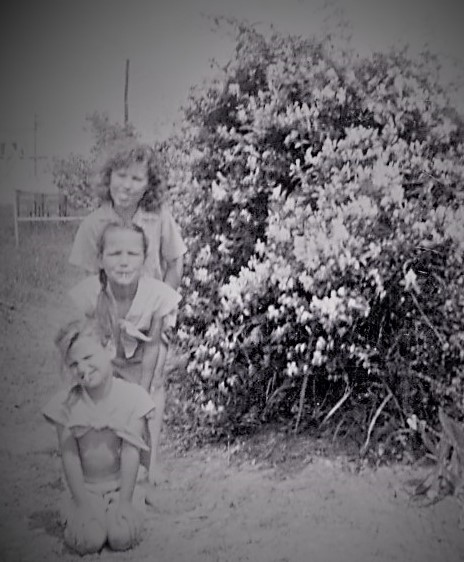

Pat and I have a cherished collection of photographs; as the two of us near our end, it seems sensible to share some of these pictures with frineds and family.
In this way, those of you who know and befriended Patricia can restore and even extend your memories of her.
Patricia was born to Jeff Augustus and Clara (Gray ) Bird on January 30, 1941, in Fort Worth, TX.
The first house in Pat's life was on Bluff Street. Close enough to downtown Fort Worth that her Mother could walk to Everybody's Department Store.
Infant Patricia M Bird, About 1 year old
Already there's that Patricia smile developing
A lot of love, care, and thought went into that infant outfit. Likely Pat was not the first child in the family to wear it, and probably not the last.
Elementary School Years
Fort Worth
Pat and family lived on Bluff Street, overlooking the Trinity River. World War Two began less than a year after Pat's birth. Sometime later, her Father Jeff Augustus Bird decided to move the family to a farm near Hope Arkansas. Jeff sold out in 1946 or 1947 and moved his family back to Fort Worth where he resumed his plumbing shop.
Pat's first school must have been Charles Nash Elementary at 401 Samuels Ave, just a few blocks away. The school was built in 1927 and remains in use.
First grader, Patricia M Bird.
Her look suggests some of the strangeness of this new world of school, a world away from Father, Mother, sisters and brothers.
Second grader, Patricia M Bird.
Pat's second grade picture shows that she is much more comfortable with her school surroundings. She has learned the tremendous utility of a smile.
Fig.4 - It's Easter and Pat and younger sister Bette wear easter dresses
Pat's and Betty have had a successful egg hunt. Likely these were real eggs, died and decorated by Mother Clara or an older sister.

Ann Johnson, Pat Bird, Betty Bird
Pat, center; Betty, lower; and Ann Johnson in front of city water tower; this pic is next to Meadow Oaks, Haltom City home. Bird family has moved to 3430 Meadow oaks; a Haltom City water tower stands behind the three girls.
High School Years
Fort Worth
Most of the younger Birds went to Birdville High School, home of the Birdville Buffaloes
Their house on Meadow Oaks afforded an easy walk to the high school (renamed Haltom High in 1960) on Carson Street.
Patricia M Bird.
Location unknown.
Patricia M Bird.
Pat's sophmore picture.
Fig.8 - Tomboy Patricia M Bird.
Pat is inclined to be active.
She ran in city sponsored races in Karori, Portland and Austin. She took regular walks with friends and children even at the onset of her illness.
Senior year picture, Patricia M Bird.
Pat's senior year picture shows her familiar adult features.